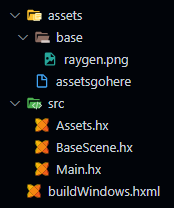
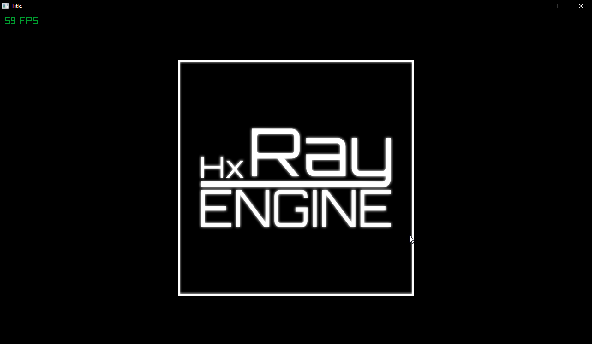

Workspace Setup
This guilde will go over how to set up your workspace.
This guide does not go over how to set up Haxe.
hxRay has 2 versions you can use for game development.
- The Haxelib Version (Stable)
- The Git version (Unstable)
The Haxelib version can be installed by running the following command in a terminal:
The Git version can be installed by running the following command in a terminal:
It is not recommended to use the git version for any important projects.
Creating a Project
Creating a project is as simple as running the following command in a terminal:
After creating your project you will be met with a file structure that should look similar to this.

(Screenshot taken in v0.0.1)
What each file does
src/Assets.hx is an empty class that uses a macro to make a string variable for each asset inside your assets directory.
src/BaseScene.hx is an example scene, it loads a sprite and displays it on screen.
src/Main.hx is responsible for setting hxRay up and loading the BaseScene. In this file you can also edit some basic game properties like resolution, and the window title.
build[Platform].hxml used for building your game, more info below.
How to build your Game
After creating a project, the first thing to do is build your game to see if your development environment works. For that simply run this in a terminal:
Make sure to replace [Platform] with your platform name. (So buildWindows, buildLinux, or buildMac).
As of 0.0.1 only buildWindows is available.
If you get any build errors, this could mean there is something wrong with the engine. In that case, please report this bug. keep in mind hxRay is still very much in development.
Once that command is done without any build errors, head to ./bin/final and run Main.exe.
You should see something like this

This means everything went well and ran correctly. You are now ready for the next guide.